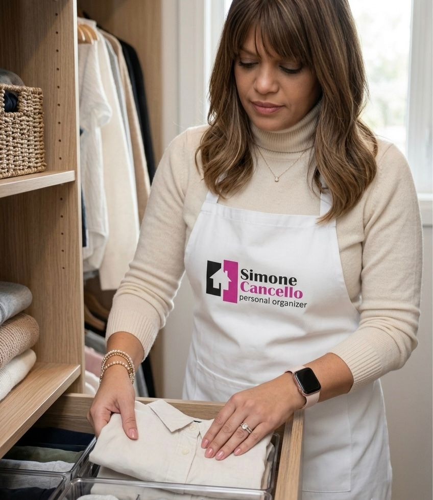
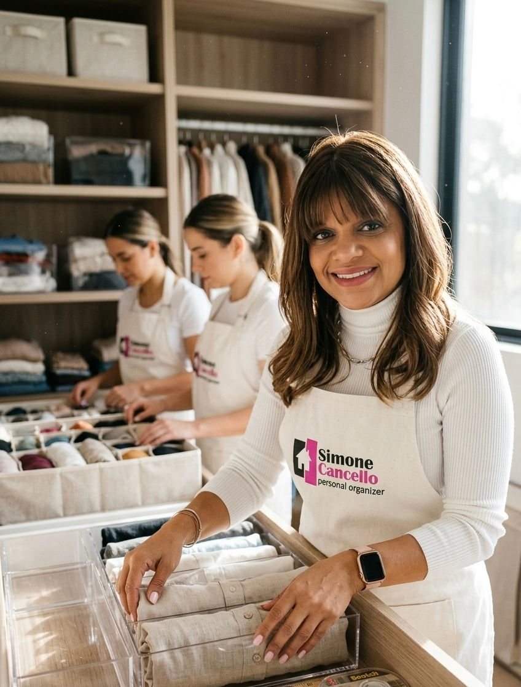
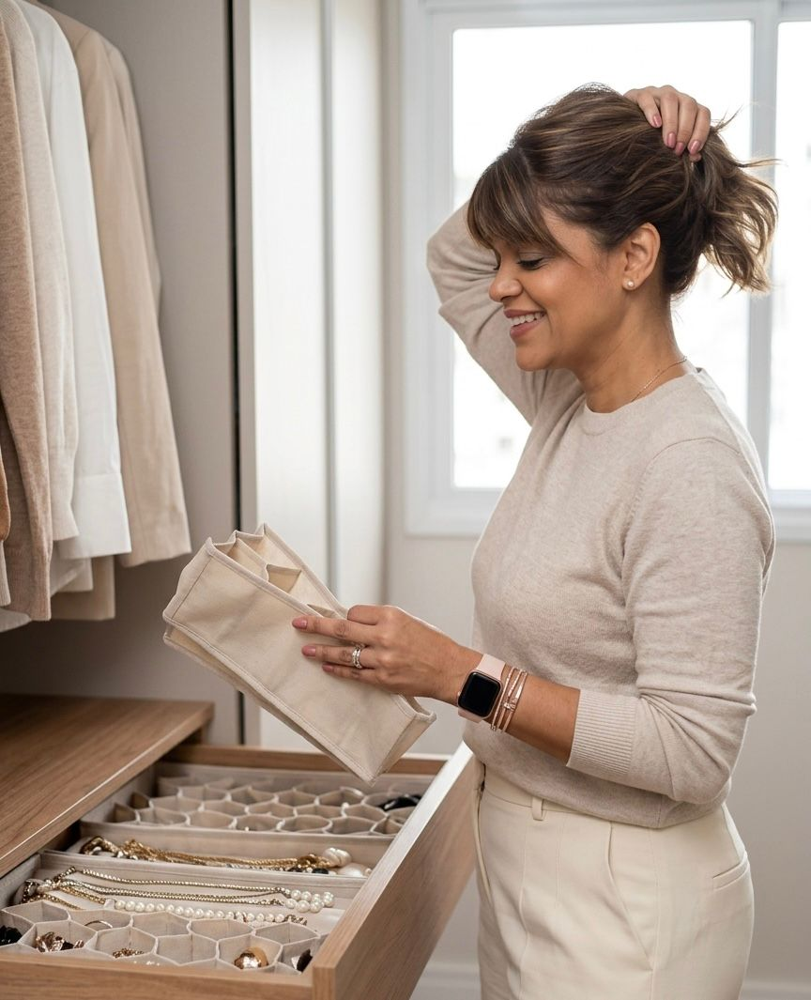
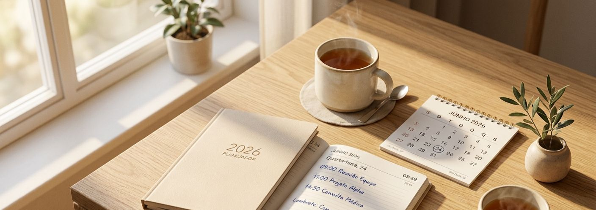
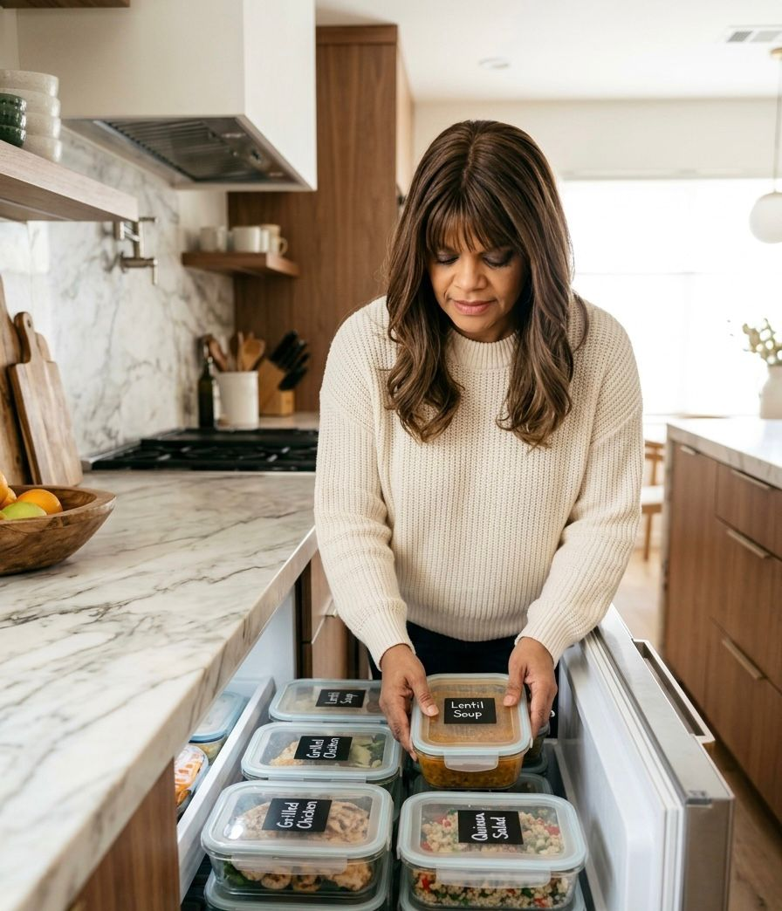
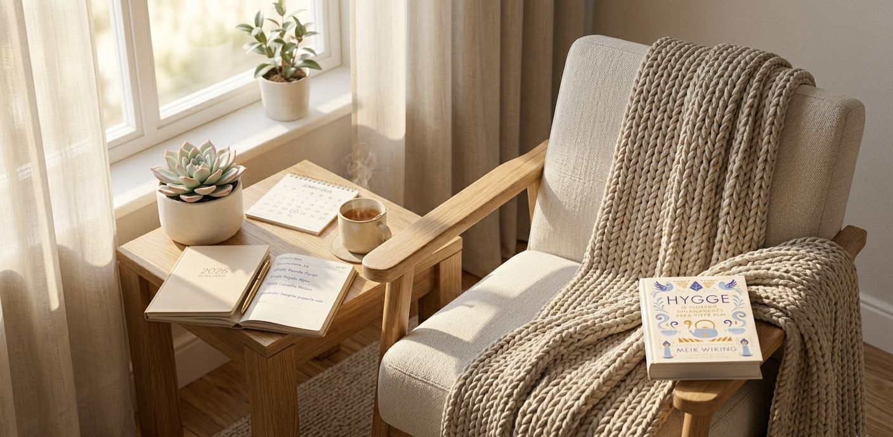
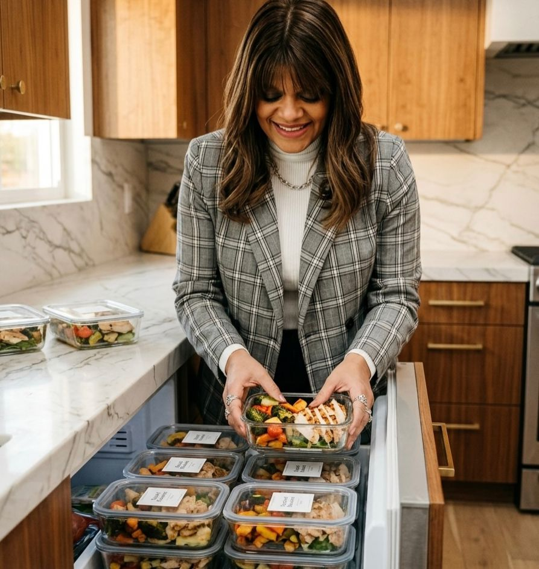
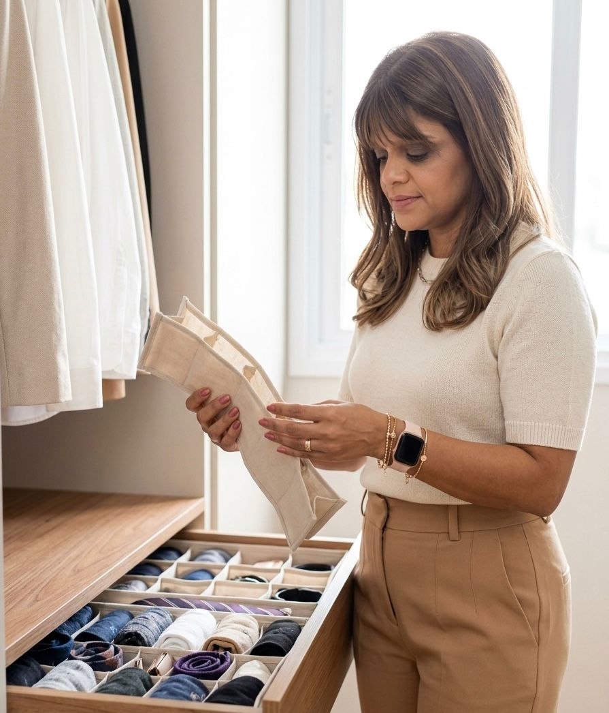
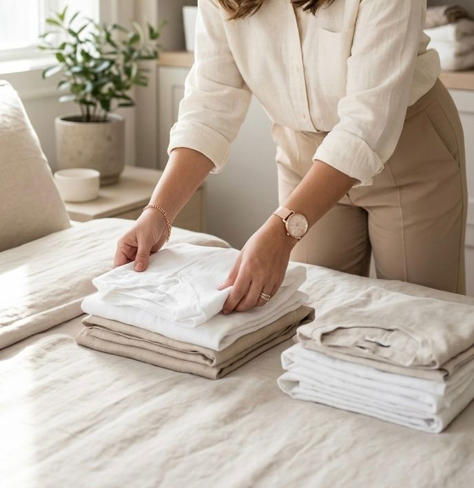
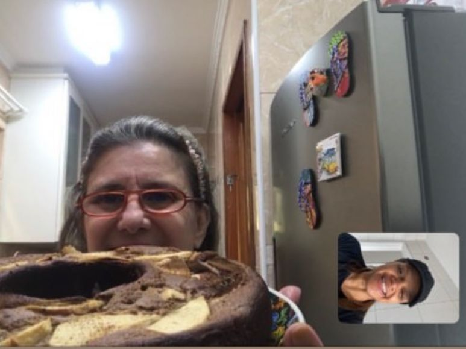

Menos bagunça. Mais vida.
Da sua casa aos seus hábitos, uma organização que respeita sua história e sua rotina.
Organizar não é controlar a vida. É abrir espaço para vivê-la.

Organização do lar
Trasforme cada ambiente em um espaço funcional, acolhedor e alinhado à sua rotina. Porque uma casa organizada abre espaço para uma vida mais leve.
Hábitos de Alimentação Consciente
A mudança começa nos pequenos passos. Crie uma relação saudável com sua alimentação e desenvolva hábitos que permaneçam no seu dia a dia.
Métodos e Rotinas Inteligentes
Organizar não é apenas guardar objetos, é criar sistemas simples que economizam tempo, reduzem o estresse e facilitam a rotina.
Bem-estar e Autocuidado
Um ambiente em harmonia reflete uma mente mais tranquila. Cuidar da casa também é uma forma de cuidar de si.
Bem-vindos ao lugar onde a sua casa encontra sua melhor versão.
Este projeto nasceu da crença de que organizar não significa buscar perfeição,
mas criar espaço para aquilo que realmente importa.
Através da organização dos ambientes, da construção de hábitos conscientes e de
uma relação mais gentil com a alimentação, meu objetivo é ajudar você a encontrar
mais leveza, autonomia e bem-estar no seu dia a dia.
Cada gaveta organizada, cada novo hábito e cada pequena conquista representam algo
maior: mais tempo para viver, cuidar de si e criar novas memórias.

Organização dos Espaços
Cada casa possui uma história. Meu método respira sua rotina, seus hábitos e transforma os espaços para que eles trabalhem seu favor.

Organização Afetiva
Organizar também é honrar histórias, preservar memórias e manter por perto aquilo que realmente faz sentido.

Rotinas que Funcionam
Pequenos sistemas e hábitos inteligentes que transformam o caos diário em uma rotina simples e equilibrada.

Alimentação Consciente
Uma nova forma de olhar para a alimentação: mais presença, equilíbrio e consciência, para que cada escolha se torne um cuidado consigo.

Autocuidado e Bem-estar
Criar um ambiente harmonioso e reservar momentos para si também é uma forma de organização e amor-próprio.

Planejamento Alimentar Inteligente
Estratégias simples para organizar refeições, reduzir desperdícios e trazer mais praticidade para a rotina.

Organização dos Espaços
Ambientes funcionais e acolhedores que facilitam sua rotina e trazem mais leveza ao dia a dia.
Transformações guiadas pelo Método Simone
Cada jornada é um processo estruturado de reorganização da casa, da rotina e dos hábitos - no seu ritmo, com acompanhamento.
Diagnóstico de Rotina
Um mapeamento completo da sua casa, rotina e hábitos para identificar onde sua energia está sendo perdida.

Rotina Inteligente
Criação de sistemas simples de organização diária para reduzir caos mental e decisões desnecessárias.

Acompanhamento Guiado
Encontros direcionados com análise da sua evolução e ajustes na sua rotina e organização.
Integração de Hábitos
Consolidação das mudanças para que sua nova rotina se mantenha de forma leve e natural.
O Que Nossos Membros Dizem
Sua transformação começa com uma conversa
Conte um pouco sobre sua rotina, seus desafios e seus objetivos. Juntas encontraremos o melhor caminho para uma casa organizada e uma vida mais leve.
Atendimento
Atendimento online
para todo o Brasil e
presenciais conforme disponibilidade.
Endereço de Email
simonecancello@gmail.com